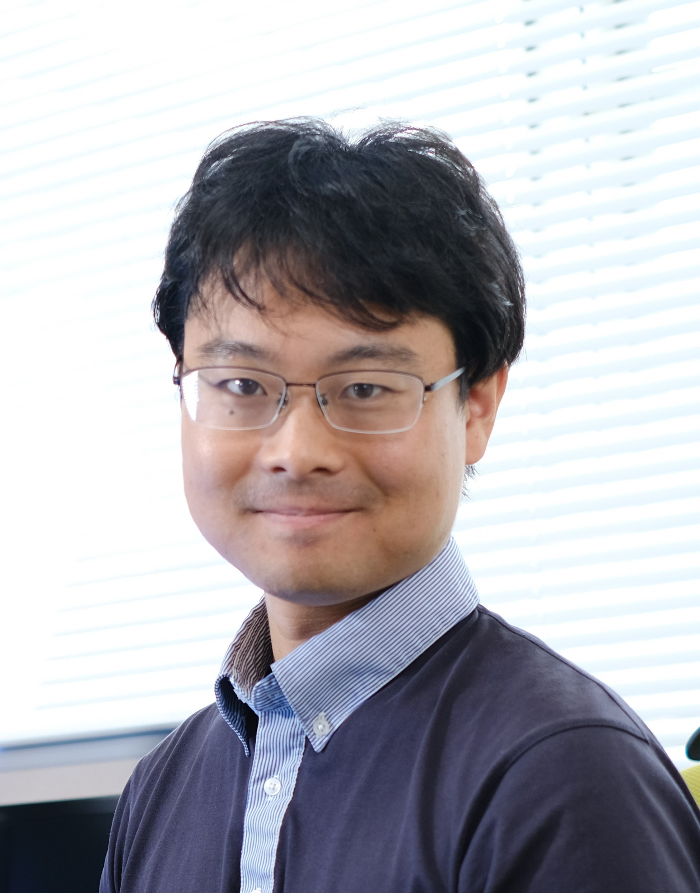

About Me
I am a research scientist located at RIKEN, Japan. My research focuses on making theories to predict the properties of catalytic reaction networks.
Many chemical processes we are interested in consist of multiple chemical reactions. For example, catalytic reactions typically involve at least two steps: First, the reactant must adsorb on the catalyst, and afterwards, the reactant must desorb to yield the product. In reality, the true mechanism is more complex with many more steps involved, thus resulting in a network of multiple chemical reactions. Right now, it is difficult to accurately predict the properties of a chemical reaction, such as the reaction rate or stability, because the kinetics of a reaction are difficult to formulate. Breaking this barrier and paving the way towards quantitative prediction of catalyst properties is my major research goal.
Due to the ubiquity of chemical reaction networks, such a theory may eventually contribute to our understanding of systems beyond catalysis. For example, biological metabolism is a network of biochemical reactions catalyzed by enzymes. The carbon (CO2) cycle is also a chemical reaction network which occurs at the ecological scale. In this way, the abstract level of understanding provided by chemical reaction networks may help us solve important challenges facing society today.
My endeavor to answer these questions has lead me to learn new techniques. After starting out as an experimental spectroelectrochemist, I have self-taught myself the basics of Python, which I now use for numerical simulations, machine learning, and bioinformatics. I have also learned chemical reaction network theory, dynamical systems analysis, complex systems analysis, chaos theory, and other branches of applied mathematics. Learning something new has always given me new vantage points from which to ask questions. I believe the freedom to do so is one of the greatest joys of being a scientist.
Curriculum Vitae
(Download Full CV)Professional Experience
- Research Scientist, RIKEN (October 2020 ~ to present).
- Visiting Scholar, Carnegie-Mellon University (October 2022 ~ December 2022).
- Special Postdoctoral Researcher, RIKEN (April 2019 ~ September 2020).
- Postdoctoral Researcher, RIKEN (April 2018 ~ March 2019).
Education
- Doctor of Engineering, March 2018. University of Tokyo, Department of Applied Chemistry (Cum Laude supervised by Prof. Hiroshi Ishikita).
- Guest PhD candidate, January 2016 ~ September 2016. Universiteit Leiden (supervised by Prof. Marc Koper).
- JSPS DC1 Scholarship, April 2015 ~ March 2018.
- Master Degree, March 2015. University of Tokyo, Department of Applied Chemistry (supervised by Prof. Kazuhito Hashimoto).
- MERIT Scholarship Program, October 2013 ~ March 2018.
- Bachelor Degree, March 2013. University of Tokyo, Department of Applied Chemistry (supervised by Prof. Kazuhito Hashimoto).
- Enrolled at the University of Tokyo, April 2009.
- Primary school education in California, 1996 ~ 2002.
Skills
- Experimental electrocatalysis and in-situ spectroscopy.
- Microkinetic modelling.
- Python (Machine learning, numerical simulations, bioinformatics).
- TOEIC score 990 (full marks) as of April 21st, 2024.